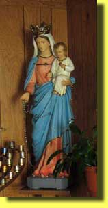
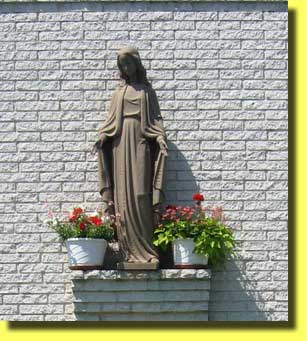
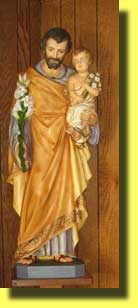
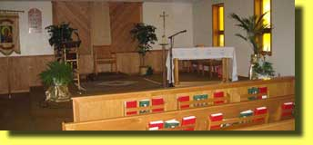
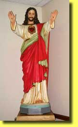

The History of Saint Mary Church
709 S. Milton Boulevard
Newton Falls Ohio,44444
(History rewritten February 1998)
St. Mary’s Parish of Newton
Falls has a long and varied History. The Church was originally
formed to serve the needs of the people in this area that were
of Polish Decent . There were many Catholics in town with this
common ethnic bond so they decided to pool their resources and
talents to establish a church that would maintain their catholic
values yet with the “Old World Flavor “ that was so deeply
imbedded in their hearts. To this end ,an independent Polish
parish was formed in Newton Falls under the direction of The
Rev. J. Nurkiewicz, an independent minister . The people, were
very
 excited and began the plans to build their long awaited
church. Being a small parish with limited funds they were only
able to build and finish the basement into their new house of worship.Unaware of the fact their director was an “Independent
Minister” they continued to worship outside the communion of the
catholic church for a few years.
When the members
discovered they were only an ” independent church” , they
dismissed Rev. Nurkiewicz . Some parishioners became
disenchanted and went to other churches. But many members who
were still willing to sacrifice to achieve their dream asked to
be reconciled to the mother church . Finally this small parish
persevered, and after many weeks and months of hard work ,the
formalities all completed , their request was granted by Bishop
Schrembs of the Cleveland diocese. Their property was deeded to
the Bishop in 1927 and the Rev. Joseph Jarosz was appointed to
take care of the parish as a Mission. The church was blessed
under the title of Our Lady of Czestochowa , (St. Mary’s Roman
Catholic Church). Early in 1928 Rev. Adolph Bernas was appointed
as pastor of this newly formed Mission . Meanwhile there was a
much larger parish being formed in Warren, Ohio , so Rev. Bernas
was transferred to the parish known as St. Joseph’s Catholic
Church and the newly formed St. Mary’s church was assigned as a
mission to St. Joseph’s. St. Mary’s church remained a mission
attached to St. Joseph’s Church of Warren, Ohio , through the
administration of the following pastors: Rev. Adolph Bernas,
Rev. John Foster and Rev. Ignatius Piotrowski.

Finally the day the
members of this tiny church longed for had arrived . on
September 9,1928 St. Mary’s church became a full fledged parish
under the administration Rev. Max J. Krajdzieski. When Father
Krajdzieski arrived In Newton Falls he found the basement church
in deplorable condition . Through the efforts of Father
Krajdzieski and several devoted parishioners , a new temporary
roof was erected and all necessary repairs were made to the
basement. This structure remained their place of worship for
nearly ten years. December 3,1938 was another milestone that
would start the last phase of the congregations dream. This was
the day they began construction of the main structure of their
church. Although it was in the middle of winter, the anxious
community razed the temporary roof and the project was under
way. Through the winter and into spring under less than ideal
conditions ,the building began to take shape. Under the capable
leadership of Fr. Krajdzieski and several members with
construction experience, the church was almost totally complete
in late March of 1939. What a very very proud day for this
congregation .
At last all the hard work,
making do ,and saving money for nearly 10 years had paid off. On
April 2,1939 , the members of Our Lady of Czestochowa with a
great sense of pride and achievement dedicated their new church.
It was a beautiful house of worship , 32’ wide x 80’ long and
the inside was 22’ high with large exposed beamed ceiling. Their
greatest achievement was in knowing that they did it without
incurring any debt. One can only imagine the personal hardships
they must have endured to meet this worthwhile goal in such a
short time. New pews and stations of the cross were added in
July of 1939 and a new furnace was added in October of that same
year. Although the building no longer belongs to St. Mary’s
church it still remains a source of pride an achievement to the
descendants of those few families who had a dream and made the
sacrifice. The demographics of the church at that time was about
40 families of polish decent and 15 families of other
nationalities. Organizations in the church were ; the Rosary
Society, the Polish women’s Alliance of America -Group 705 and
in 1940 a young men’s club was organized known as “Club of St.
Casimir” . All vital statistics of the parish are housed in the
archives
 of the church.
From the day Fr.
Krajdzieski arrived in Newton Falls, St. Mary’s Church seemed to
take on a new and vibrant life, and it showed in all that they
were able to accomplish in ten short years. During World War II
, the United States Government built a large complex at the
corner of Route 534 and Maple Drive ,which was used as a nursery
for the children of mothers that worked at the Ravenna Arsenal.
In 1949 Under the pastorate of Fr. Aloysius Rzendarski , Bishop
James A. McFadden of the newly formed Diocese of Youngstown,
purchased this property and plans were made to convert one of
the buildings into a Parochial School. Fr. Rzendarski traveled
more than 6,500 miles throughout the eastern United States to
find a community of Nuns to staff the school . Finally he was
successful in getting the Sisters of the “Holy Family of
Nazareth” whose Motherhouse was in Bellevue, Pennsylvania. St.
Mary’s school became a reality and through the years educated
many children from Newton Falls and outlying areas. Father Leon
Dobosiewicz succeeded Fr. Rzendarski as pastor in 1959 and under
his direction and much of his own labor , built the present St.
Mary’s Social
 Center . After Fr. Dobosiewicz, Fr. William
Slipski assumed the pastorate of St. Mary’s church in 1964 .
During his tenure Fr. Slipski sold the original church and
property on North Canal St. and parishioners began to utilize
the Social Center for religious purposes.
Fr. Slipski purchased a
large parcel of land on the south side of town from the Robert
McCullough family and built a new Rectory, Convent and School.
During construction of the school Bishop Malone, of the
Youngstown Diocese , declared that St. Mary’s and St. Joseph’s
churches should combined their resources for this new school, so
in September of 1966 the two organizations jointly formed
Catholic Elementary School . Today the school is known as “
Saints Mary and Joseph School” and provides an education for our
students from kindergarten through junior high . It has become a
great source of pride for both parishes as well as a respected
and highly regarded educational Institution in Newton Falls and
surrounding communities. The remaining mortgage St. Mary’s had
taken out for the Catholic Elementary School was retired in
February of 1976 . St. Mary’s future plans called for a new
church to be erected beside the school. Fr. Slipski left Newton
Falls in 1968 to accept another pastorate and he was followed by
:

Fr. Edward Kowaleski
Fr.
Edward Wieczorek (Pro-Tem )
Fr. Sylvester Kaminski
Fr. Edward Neroda
Fr. John Mulqueen
Fr. Terrence Hazel (Pro-Tem)
Fr. Thomas Bissler
Fr. Blaine Pierce (Pro-Tem)
Fr. Peter Polando
Fr. David Merzweiler(Shared with St.
Catherine’s)
Fr. Kenneth Strader ( Shared
with St. Joseph’s)
Fr. John Madden (Shared with St. Joseph’s)
Fr. Matthew Mankowski (Shared with St. Joseph’s)
This history of St. Mary’s Church was rewritten, by Bob And
Trudi Pittman , from information supplied from archive’s of St.
Mary’s Church and the Diocese of Youngstown .(Feb. 1998) |